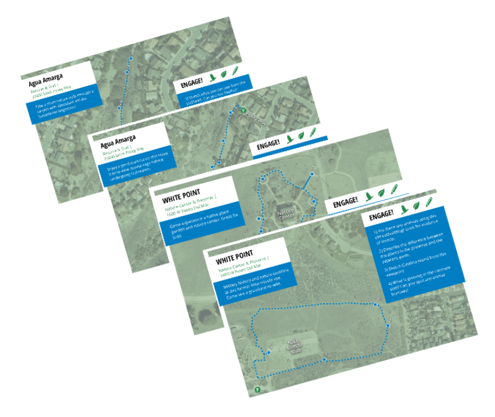
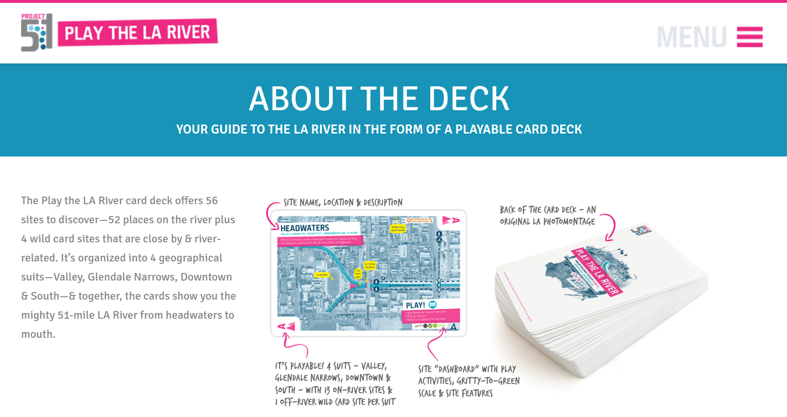
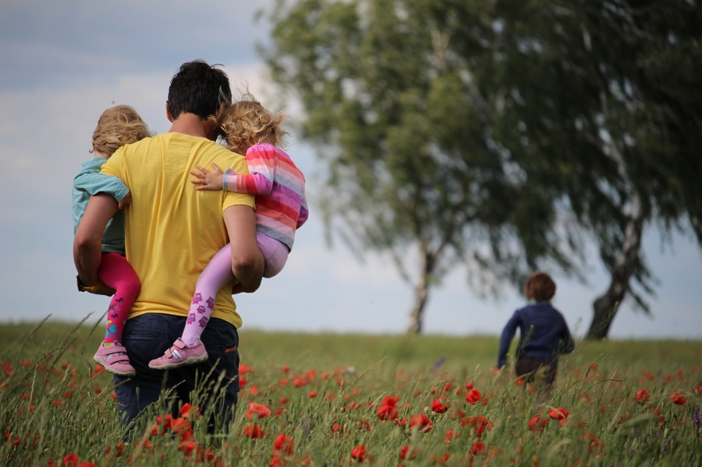
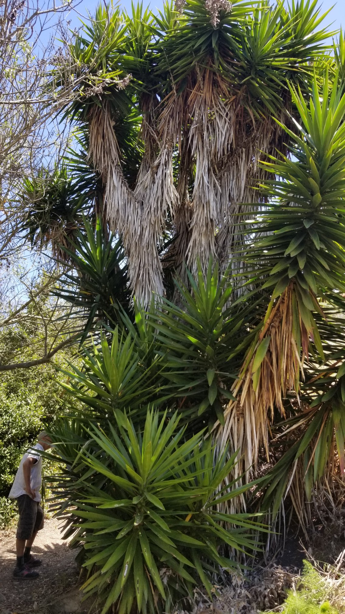
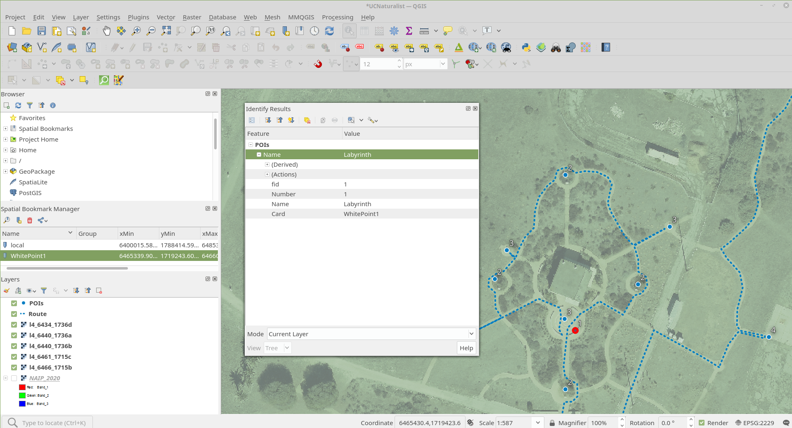
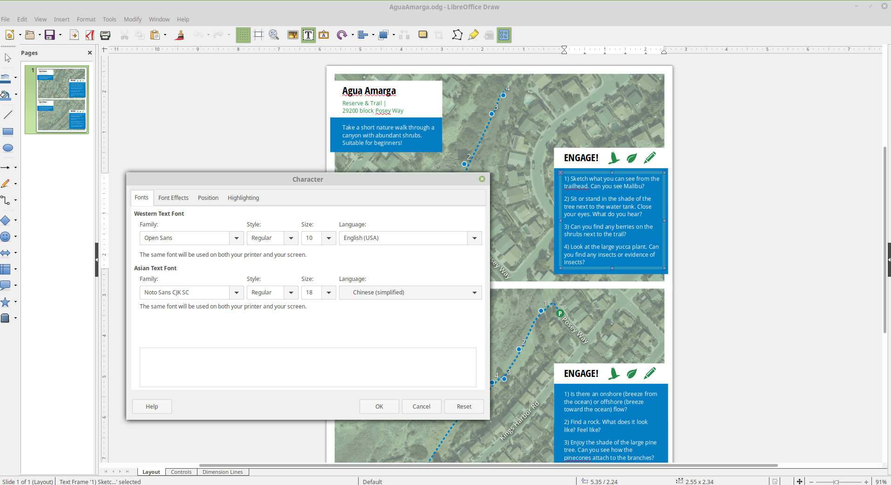
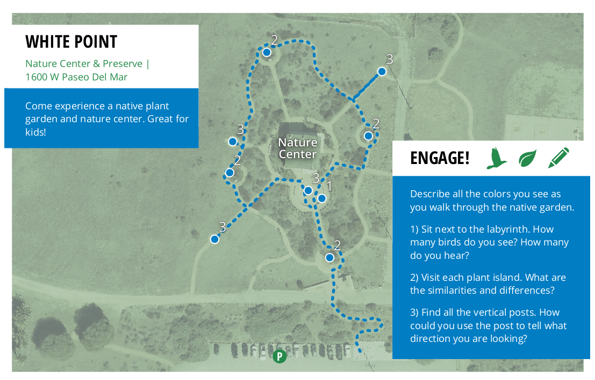
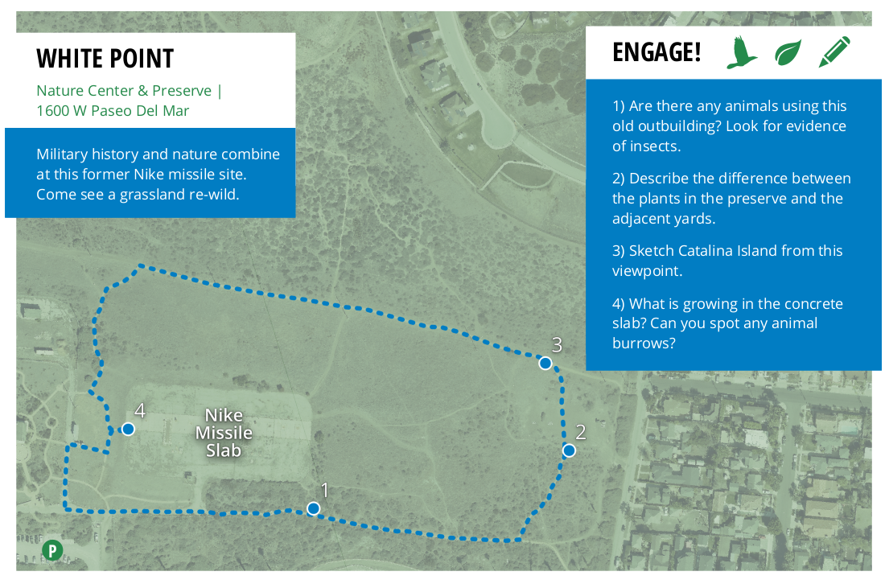
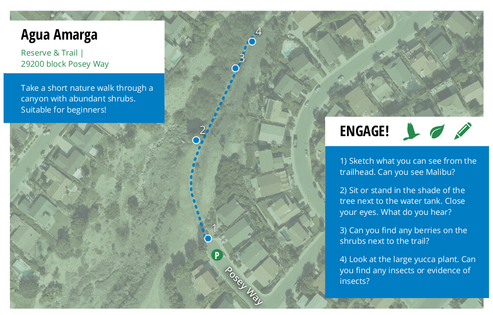
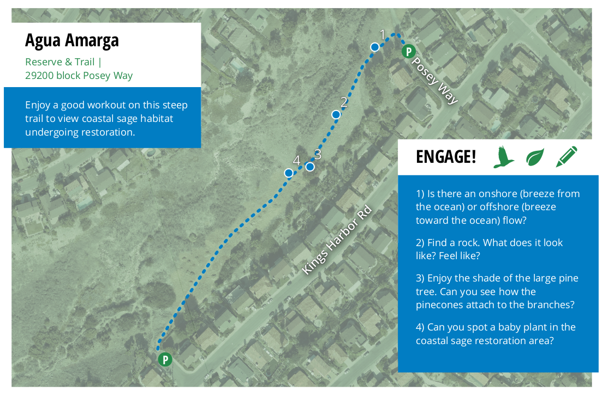

Palos Verdes Map Adventure Cards
Bond Harper
Goal: create 4 map adventure cards for park areas on Palos Verdes Peninsula Land Conservancy property.
Inspired by: https://playthelariver.com/
Audience: people of all ages. No prior knowledge required.
Photo by Juliane Liebermann on Unsplash
Step 1: pick the locations

Map from pvplc.org
Step 2: visit the preserves and identify points of interest
Step 3: create the maps
Step 4: design the cards
Pivot
Less technical, more experiential.
Information is easy to access, connections with nature can be harder to make.
Photo by Zen Chung from Pexels
Card 1
Card 2
Card 3
Card 4
Data, map files, card layouts, PDFs, and these slides can all be found at bondah.github.io/ucnaturalist